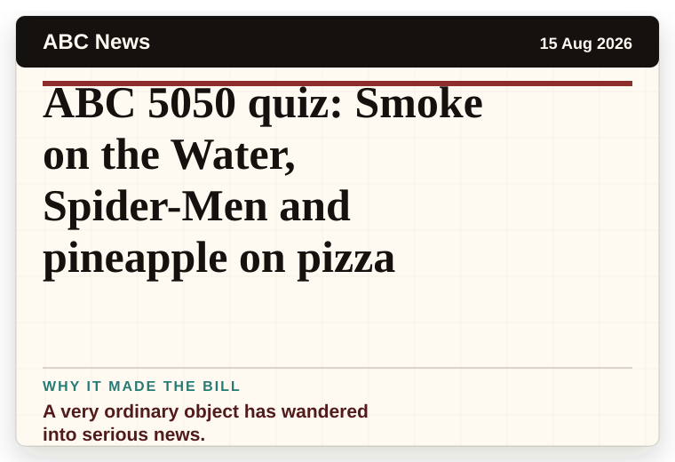
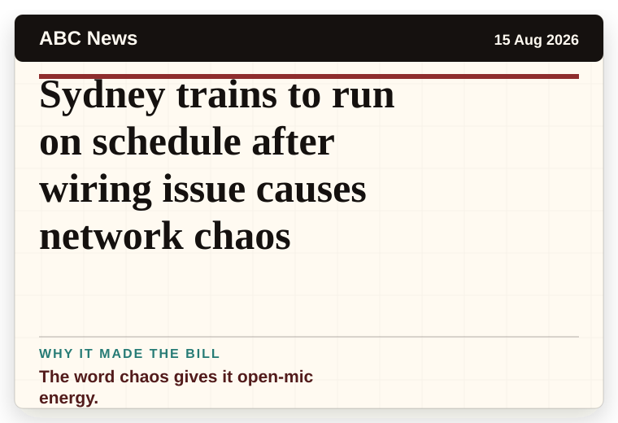
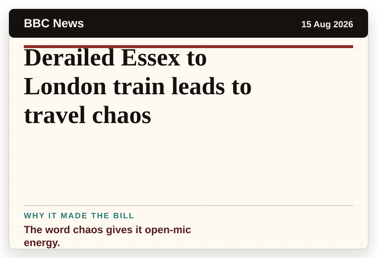
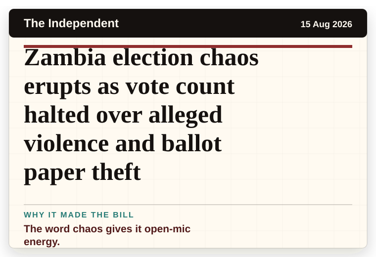
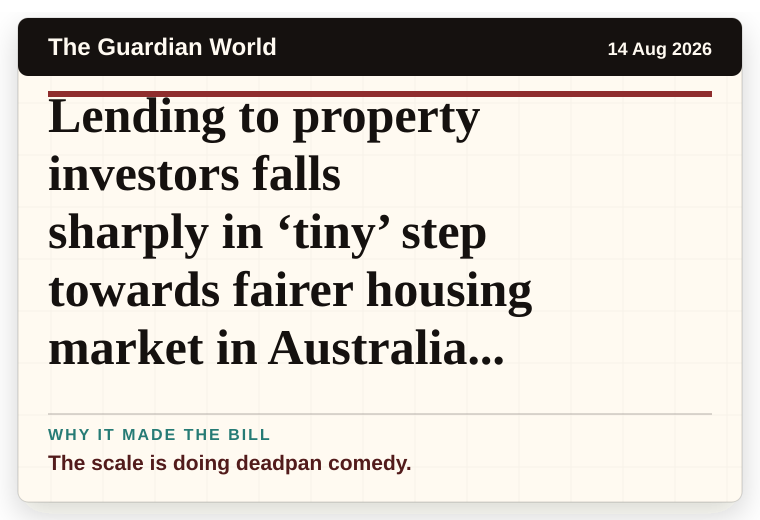
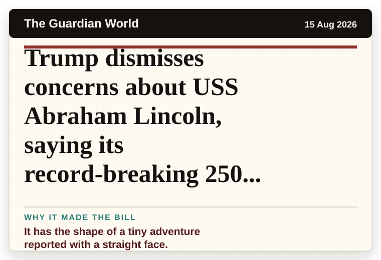
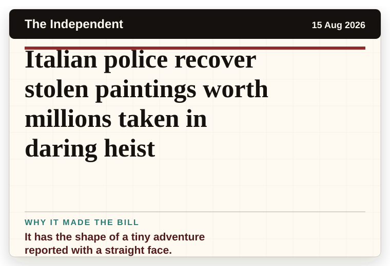
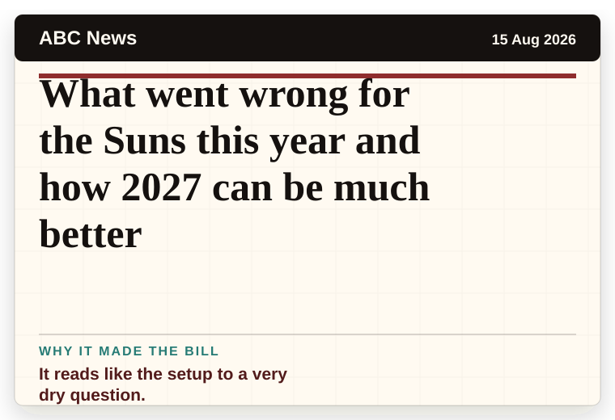
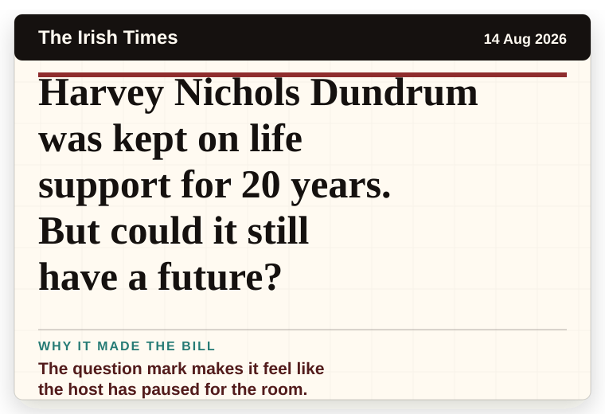

NT News
Australia
Are the Eels a sleeping giant, or asleep at the wheel?
The scale is doing deadpan comedy.
The latest daily picks, linked back to the original sources. Search the room, pick a source, or follow a headline out to the full story.
Record updated: 15 Aug 2026, 07:42 AM AEST
Showing 17 headline candidates from the refresh run completed on 15 Aug 2026, 07:42 AM AEST.
The scale is doing deadpan comedy.

A mystery is doing a lot of work in a very small sentence.

A very ordinary object has wandered into serious news.

The headline is already trying not to laugh.

It has the shape of a tiny adventure reported with a straight face.

A wonderfully specific detail has taken centre stage.

A very ordinary object has wandered into serious news.

The question mark makes it feel like the host has paused for the room.

A very ordinary object has wandered into serious news.

The word chaos gives it open-mic energy.

The word chaos gives it open-mic energy.

The word chaos gives it open-mic energy.

The scale is doing deadpan comedy.

It has the shape of a tiny adventure reported with a straight face.

It has the shape of a tiny adventure reported with a straight face.

It reads like the setup to a very dry question.

The question mark makes it feel like the host has paused for the room.